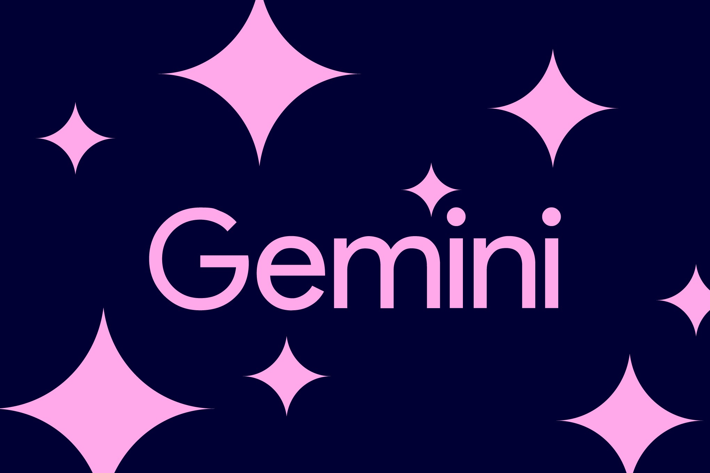

На обновлённом индексе Artificial Analysis Intelligence Index v5.0 Carbon дебютировала на первом месте с 59 баллами, оставив позади Claude Opus 5.5 и GPT-6 Astra. Но главный акцент — профильные безопаснические тесты: 88,2% в SEC-bench Pro (поиск уязвимостей), 54,8% в ExploitGym (эксплуатация) и 71,0% в CWE-bench (патчи). В веб-разработке модель подскочила на 89 эло-пунктов до 1768 и четвёртого места в WebDev Arena. Внутренние тесты, по заявлению Google, показали рост качества защищённого кода и снижение «выдумывания» фактов у модели.
Carbon построена на Gemini 4 Argon, которую Google выпустила всего две недели назад, и рассчитана на длинные автономные задачи: внутренние команды Google запускали её на несколько суток подряд — она упорно проходит через тупики, разбирается с первопричинами сложных ошибок и чинит их в крупных кодовых базах и низкоуровневых системах. Это уже не чат-помощник, а рабочий агент для инженерных марафонов.
Google сознательно замедлила выдачу доступа: с этой недели модель получат избранные компании-киберзащитники в рамках программы Fairwind, затем доступ расширят на доверенных партнёров. Компания участвует в добровольной госпрограмме предрелизного тестирования моделей в США и обещает открыть Carbon разработчикам, бизнесу и потребителям «как можно скорее», но после доработки защитных механизмов. Цена при этом обещана вводная, как у Argon: $2 за миллион входных токенов и $10 за миллион выходных, кэшированные входы — со скидкой 95%.
Схема «сначала отдаём щиту, потом всем» — прямой ответ на то, что возможности моделей по поиску и эксплуатации уязвимостей растут быстрее, чем оборона успевает перестраиваться. За две недели Google перескочила с Argon на Carbon — и гонка фронтир-моделей теперь идёт на освоенность длинных агентских циклов, где ИИ неделями живёт в чужом коде. Выбор «защитники первыми» показывает, как сами лаборатории оценивают двойное назначение таких способностей.